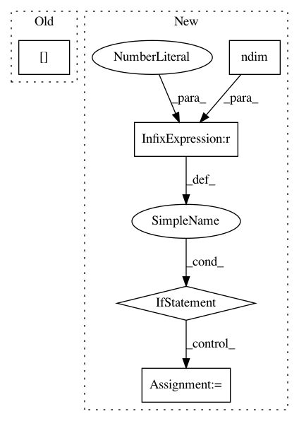

b3ceddd0b4d21f32e55dd4126300973c6a732e63,src/skmultiflow/trees/attribute_observer/numeric_attribute_regression_observer.py,NumericAttributeRegressionObserver,get_best_evaluated_split_suggestion,#NumericAttributeRegressionObserver#Any#Any#Any#Any#,95
Before Change
self._sum_sq_total_left = 0.0
self._sum_sq_total_right = pre_split_dist[2]
self._count_left_total = 0.0
self._count_right_total = pre_split_dist[0]
return self.search_for_best_split_option(self._root, None, criterion, att_idx)
def search_for_best_split_option(self, current_node, current_best_option, criterion, att_idx):
if current_node is None or self._count_right_total == 0:
After Change
self._aux_sum_weight = 0
// Handles both single-target and multi-target tasks
if np.ndim(pre_split_dist[1]) == 0:
self._aux_sum = 0.0
self._aux_sum_sq = 0.0
else:
self._aux_sum = np.zeros_like(pre_split_dist[1])
self._aux_sum_sq = np.zeros_like(pre_split_dist[2])
candidate = AttributeSplitSuggestion(None, [{}], -float("inf"))
best_split = self._find_best_split(self._root, candidate)
In pattern: SUPERPATTERN
Frequency: 3
Non-data size: 5
Instances
Project Name: scikit-multiflow/scikit-multiflow
Commit Name: b3ceddd0b4d21f32e55dd4126300973c6a732e63
Time: 2020-04-22
Author: saulomastelini@gmail.com
File Name: src/skmultiflow/trees/attribute_observer/numeric_attribute_regression_observer.py
Class Name: NumericAttributeRegressionObserver
Method Name: get_best_evaluated_split_suggestion
Project Name: dmlc/dgl
Commit Name: deb653f8dc9b396ba99d5c66e0658fb056f37a38
Time: 2018-11-22
Author: ly979@nyu.edu
File Name: python/dgl/function/message.py
Class Name: SrcMulEdgeMessageFunction
Method Name: __call__
Project Name: keras-team/keras
Commit Name: 8b3543fca9d811c638bb72d78601c8564f5465fd
Time: 2016-04-03
Author: EderSantana@users.noreply.github.com
File Name: keras/backend/tensorflow_backend.py
Class Name:
Method Name: batch_dot